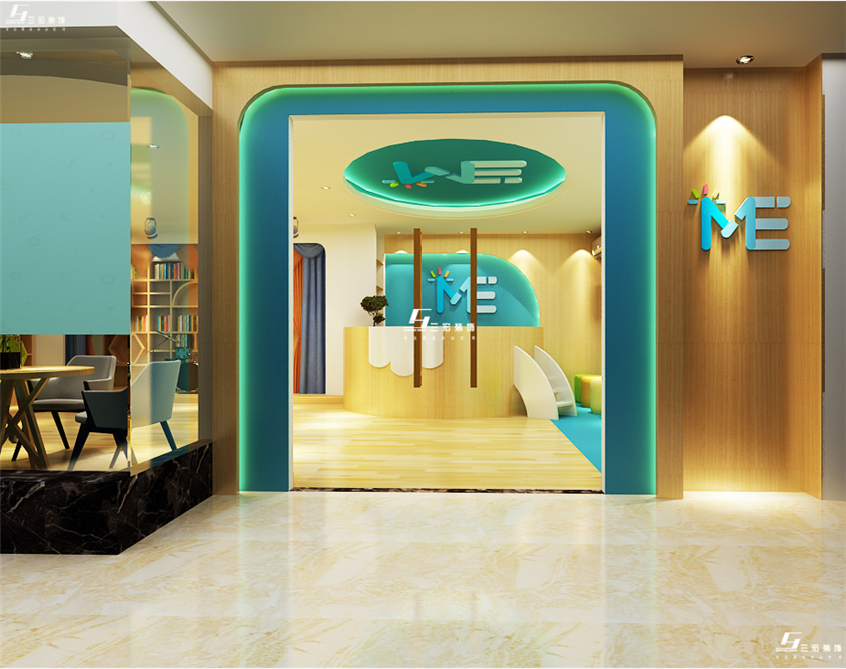

ye Education Chain, founded in 2001, is a private education institution and educational entity specializing in the development of children's brain potential and artistic cultivation. The institution emphasizes "centering on the ideal development of children" and "comprehensive education with full participation, whole process and facing all", and aims to achieve the "ideal development of group children", which is also the concentrated embodiment of the educational achievements of president XX in the past ten years. Since the successful establishment of the first XX kindergarten in 2001, AFTER ten years of rolling development, XX education has developed to have eight XX direct parks, direct parks throughout the five districts of XX. There are nearly 300 faculty members and nearly 2,000 enrolled students. On the basis of the fruitful achievements of running the garden for many years, the whole process transcends the traditional teaching mode at the historic moment, which is the continuation and crystallization of XX's continued reform.